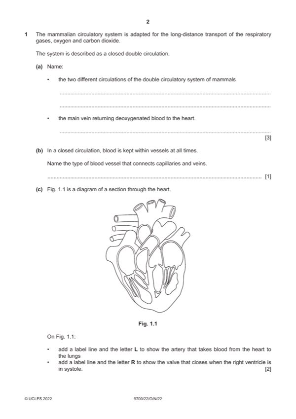

Question 1

Original paper page 2
Part 1(a) — solution
pulmonary (circulation) ; 3
systemic (circulation) ; R systematic
vena cava / inferior vena cava / superior vena cava ; A venae cavae
Mark points
- Include the ideas shown in the solution above.
Part 1(b) — solution
venule / venules ; 1
Mark points
- Include the ideas shown in the solution above.
Part 1(c) — solution
label line pointing to, left atrioventricular / tricuspid, valve and labelled R ; 2
R if pointing to one of the chordae tendinae
label line pointing to, pulmonary artery and labelled L ;
A pointing to left or right pulmonary artery
Mark points
- Include the ideas shown in the solution above.
Part 1(d) — solution
globular ; 5
intracellular ; R intercellular
water and H2O ;
carbonic acid ;
hydrogen and H+ ;
Mark points
- Include the ideas shown in the solution above.
Part 1 — solution
no, S phase / G2 phase / mitosis / cytokinesis ;
A remains in (G1) interphase
A synthesis phase for S phase
I named mitotic stages
look for CON e.g. ‘no S-phase, so mitosis only has one chromatid’
Mark points
- Include the ideas shown in the solution above.
Part 1 — solution
ref. to time delay in immune response (compared to normal) ;
e.g. takes a longer time for, immune system to respond
slower (secondary) immune response
immune response similar to primary response
Mark points
- Include the ideas shown in the solution above.
Part 1 — solution
drugs have different, targets / mechanisms of action,
or
drugs, act on different, structures / processes / stages of life cycle ;
Mark points
- Include the ideas shown in the solution above.
Part 1 — solution
zero survival of no cultures 1 and 4 / no mutations, no survival / 0% survival rate / all killed, at, higher
mutation concentration / 700 ;
Mark points
- Include the ideas shown in the solution above.
Part 1 — solution
(Golgi /secretory) vesicles, detail ;
e.g. packaging of / containing, collagen
vesicles bud off from Golgi body
context of movement to surface (not movement to other areas within cell)
Mark points
- Include the ideas shown in the solution above.
Part 1 — solution
(water is a) solvent, for, assimilates / minerals / ions / polar molecules
A hydrophilic
A named
or
substances, in xylem and phloem sap / that are transported, dissolve in water / are in solution ;
A (water is a) good / universal / versatile, solvent
Mark points
- Include the ideas shown in the solution above.